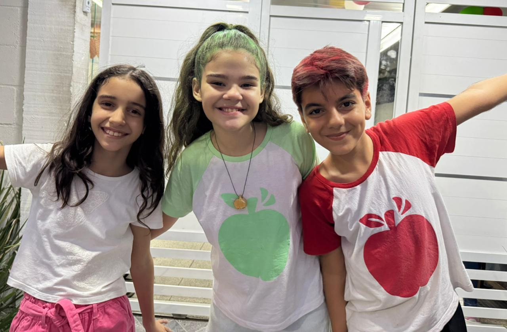

"Todas as amizades mudam, mas as boas se tornam mais fortes por causa disso."
— Wi-Fi Ralph: Quebrando a Internet
Vanellope von Schweetz (Clique para colorir/P&B)
Detona Ralph (Passe o mouse para um Detona-Efeito!)

Amigos na Vida Real (Clique 2x para focar/desfocar)